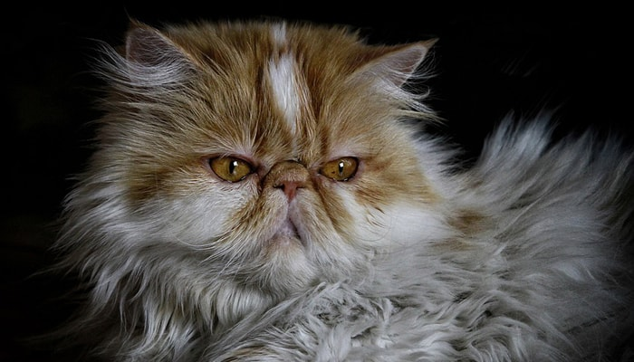

ประวัติของแมว
"แมว" หรือชื่อทางวิทยาศาสตร์ว่า "Felis Catus" มีกำเนิดขึ้นบนโลกมากกว่า 50 ล้านปีมาแล้ว นัีกชีววิทยาค้นพบว่าบรรพบุรุษของแมวถือกำเนิดขึ้นกว่า 50 ล้านปีมาแล้ว เป็นสัตว์เลี้ยงลูกด้วยนมและิกินเนื้อเป็นอาหาร เรียกว่า Miacis และได้วิวัฒนาการจนเริ่มมีลักษณะคล้ายแมวเมื่อ 10 ล้านปีก่อน ขนาดและรูปร่างใกล้เคียงกับแมวป่าที่มีเขี้ยวขนาดใหญ่เรียกว่า Dinistis ในความจริงแล้วนั้นแมวบ้านมีต้นตระกูลที่แยกออกมาจากเสือไซบีเรียน และแมวพื้นเมืองต่าง ๆ ปัจจุบันสายพันธุ์แมว (รวมทั้งสิงโตและเสือต่าง ๆ ) มีทั้งหมดถึง 36 ตระกูล 51 ชนิด
ชาวอียิปต์โบราณ นับถือแมวเป็นสัตว์เทพเจ้าถึงกับว่าหากแมวตายในบ้านต้องนำไปทำมัมมี่เลยทีเดียว ขนาดคนที่จะนำไปทำมัมมี่ยังต้องเป็นเฉพาะราชวงศ์ หรือขุนนางเท่านั้น ซึ่งมัมมี่ที่ว่านี้ สามารถตามไปดูกันได้ที่พิพิธภัณฑ์ในประเทศอังกฤษ เหตุที่ชาวอียิปต์โบราณนับถือแมวเป็นสัตว์เทพเจ้านั้น เพราะเมื่อประมาณ 4,000 กว่าปีก่อน กลุ่มชาวนาได้นำแมวป่ามาฝึกใช้ในการจับหนูในโรงนา ที่เข้ามาทำความเสียหายกับผลผลิตและพืชพันธุ์ของชาวนา เมื่อหนูในโรงนาหมดไป ประชาชนก็มีอาหารอุดมสมบูรณ์ขึ้น แถมยังปราศจากโรคภัยที่เกิดจากหนูอีกด้วย แมวจึงได้ถือว่าเป็นสัตว์เทพเจ้าในยุคอียิปต์โบราณนั่นเอง ซึ่งเทพเจ้า Bastes หรือเทวีบัสเตต ที่ชาวอียิปต์นับถือนั้น มีตัวเป็นคนแต่มีหัวใจเป็นแมวเป็นตัวแทนแห่งความรัก ความอุดมสมบูรณ์ ฉะนั้นหากใครฆ่าแมวจะต้องถูกลงโทษอย่างหนัก ยกตัวอย่างเช่นในสมัยก่อนพวกที่ต้องการยึดครองอาณาจักรอีิยิปต์โบราณจึงใช้วิธีอุ้มแมวไปรบด้วยซึ่งชาวอียิปต์นั้นก็ไม่กล้าที่จะต่อสู้แต่นั่นก็ไม่ได้หมายความว่า อาณาจักรอียิปต์ล่มสลายเพราะแมว ถึงอียิปต์โบราณจะล่มสลายแต่ความนับถือแมวเป็นดั่งเทพเจ้าก็ยังเหมือนเดิม
เคยสงสัยกันบ้างหรือเปล่าว่า แมวขยายพันธุ์ข้ามน้ำข้ามทะเลไปทั่วโลกได้อย่างไร ก็เพราะชาวอียิปต์ไม่เพียงแต่ใช้หนูจับแมวในโรงนาเท่านั้น ยังใช้จับหนูบนเรือสินค้าอีกด้วย จึงมีความเชื่อว่าเมื่อเรือเทียบท่า แมวก็ได้ลงเรือแต่ไม่ได้กลับขึ้นมาบนฝั่ง เลยเป็นเหตุให้มีแมวไปทุกแห่งหนทั่วโลก
แต่สำหรับยุคกลางในยุโรป นั้นมีความเชื่อเรื่องแมวที่แตกต่างกับยุคอียิปต์โบราณโดยสิ้นเชิง โดยมีความเชื่อว่าแมวเป็นตัวแทนของความชั่วร้ายต่าง ๆ เป็นสัตว์เลี้ยงของแม่มดโดยเฉพาะแมวดำ และหากชาวยุโรปคนใดในยุคนั้นเลี้ยงแมวจะถูกประณามว่าเป็นแม่มดที่ชั่วร้าย ถ้ายิ่งเป็นคนแก่เลี้ยงแมวด้วยนี่สิยิ่งแย่ไปกันใหญ่ เรียกว่าเป็นต้องโดนจับเผาทั้งเป็นไม่ว่าคนหรือแมวก็ตาม และช่วงนี้เองที่ทำให้กาฬโรคเกิดการระบาดหนักในยุโรปเพราะปริมาณของหนูขณะนั้นนับวันยิ่งเพิ่มปริมาณมากขึ้น แต่แมวกลับยิ่งลดจำนวนน้อยลงนั่นเอง
ถัดมาดูทางแถบเอเซีย อย่างในประเทศญี่ปุ่นและประเทศจีนกันบ้าง ได้เิริ่มนิยมเลี้ยงแมวกันมากขึ้นกว่าเดิมที่เคยเลี้ยงกันอยู่แล้ว เพราะที่ประเทศญี่ปุ่นใช้แมวเป็นสัญลักษณ์ในการนำโชค อย่างที่เคยเห็นกันอยู่ตามร้านค้าทั่วๆ ไปนั่นก็คือ " แมวกวัก " จะใช้กวักเรียกลูกค้าให้เข้ามาอุดหนุนสินค้า หรือจะความเชื่อว่าแมวเป็นตัวแทนแห่งโชคลาภเช่นกัน การที่แมวเข้ามาอยู่ในบ้านถือว่าเป็นเรื่องที่ดีมากเพราะทำให้เจ้าของบ้านมีโชคลาภมาเสมอ
ประเทศไทย เราก็มีการเลี้ยงแมวมานานแล้วเหมือนกันตั้งแต่สมัยสุโขทัยโน่น แมวไทยคู่แรกได้ออกสู่สายตาชาวโลกเมื่อปี พ.ศ. 2427 เป็นแมววิเชียรมาศแต้มสีครั่ง โดยพระบาทสมเด็จพระจุลจอมเกล้าเ้จ้าอยู่หัว (ร.5) ทรงพระราชทานให้กับกงศุลอังกฤษประจำกรุงเทพมหานคร ขณะนั้นคือ Mr.Owen Gould และได้นำไปให้แก่น้องสาวที่อังกฤษอีกทอดหนึ่ง แต่หลังจากนั้น เมื่อปีพ.ศ.2428 แมวไทยคู่นี้แหละได้เข้าประกวดที่ประเทศอังกฤษ ในงาน The Crystal Palace และได้รับรางวัลชนะเลิศในการประกวดอีกด้วยจากการประกวดครั้งนี้เองที่เป็นจุดเิริ่มต้นให้ชาวอังกฤษ นิยมหันมาเลี้ยงแมวไทยกันมากขึ้น จนได้จัดตั้ง The Siamese Cat Clubs ในปี พ.ศ 2443 และ The Siamese Cat Society of the Brithish Empire ในปี พ.ศ. 2471 จากเหตุการณ์ครั้งนั้นทำให้แมวไทยคู่นี้มีชื่อเสียงเป็นที่รู้จักกันทั่วอังกฤษ พระบาทสมเด็จพระจุลจอมเกล้าเจ้าอยู่หัว จึงทรงเห็นว่าแมวไทยสามารถทำให้ประเทศไทยเป็นที่รู้จักแก่ประเทศอื่น ๆ ทั่วโลก จึงได้พระราชทานแมวไทยให้กับหลาย ๆ ประเทศ จนแมวไทยและประเทศไทยกลายเป็นที่รู้จักมีชื่อเสียงไปทั่วโลกนั่นเอง
แมวที่นิยมเลี้ยง

1.แมวเปอร์เซีย (Persian) ถือได้ว่าเป็นแมวที่สวยงามมากในทางฝั่งตะวันออกกลาง แน่นอนเลยว่ามีถิ่นกำเนิดอยู่ในแถบเปอร์เซีย หรือประเทศตุรกีกับอิหร่านในปัจจุบัน เปอร์เซียถือเป็นแมวต่างประเทศสายพันธุ์แรกๆ เลยก็ว่าได้ที่ถูกนำเข้ามาในประเทศไทย จึงทำให้แมวสายพันธุ์นี้ยังคงเป็นที่นิยมในหมู่คนรักแมว เพราะนอกจากจะมีหน้าตาน่าเอ็นดูแล้ว ขนฟูของเจ้าแมวเปอร์เซียนี้ยังมีสีสันที่หลากหลาย และนิสัยส่วนตัวก็แสนน่ารักอีกด้วยล่ะค่ะ แหม่…แบบนี้ใครไม่ตกหลุมรักก็บ้าแล้ว
2.อเมริกันช็อตแฮร์ (American Short Hair) แมวสายพันธุ์อเมริกาที่สืบเชื้อสายมาจากประเทศในแถบยุโรป และแพร่พันธุ์มายังอเมริกา เมื่อสมัยที่ชาวยุโรปเดินทางไปแสวงหาถิ่นที่อยู่ใหม่ โดยพวกเขาได้นำแมวอเมริกันช็อตแฮร์ติดเรือไปด้วย เพื่อป้องกันไม่ให้หนูทำลายข้าวของ และได้มีการพัฒนาสายพันธุ์ในเวลาต่อมา จนกระทั่งกลายเป็นแมวพื้นเมืองขนสั้นของอเมริกาไปในที่สุด
3.สก็อตติช โฟลด์ (Scottish Fold) เป็นแมวที่มีถิ่นกำเนิดมาจากประเทศสกอตแลนด์ โดยแมวพันธุ์ Scottish Fold นี้ถูกค้นพบครั้งแรกในปี ค.ศ.1961 ในสกอตแลนด์ ชื่อว่า Susie มีลักษณะเป็นแมวสีขาวที่มีหูพับไปมาทั้งด้านหน้า และด้านหลังได้ ใบหน้ามีลักษณะคล้ายนกฮูก หรือหน้าของตัวนาก ผู้ที่สังเกตเห็นคนแรกคือ William Ross มีอาชีพเป็นคนเลี้ยงแกะ William และ Marry ภรรยาของเขาเป็นคนที่รักแมวมาก ทั้งคู่สนใจในตัวของเจ้า Susie เป็นอย่างมากมาก เมื่อเจ้า Susie ได้ออกลูกเป็นลูกแมวหูพับ 2 ตัว ครอบครัวของเขาจึงขอลูกแมวตัวเมียตัวหนึ่งมาเลี้ยง และได้ตั้งชื่อว่า Snooks นี่จึงเป็นต้นกำเนิดของสายพันธุ์ Scottish Fold
4.แมวโคราช (Korat) เจ้าเหมียวพันธุ์นี้มีชื่อเรียกมากมาย ไม่ว่าจะเป็น แมวมาเลศ แมวดอกเลา หรือแมวสีสวาด ซึ่งเป็นหนึ่งใน 17 แมวมงคลของไทย ที่ได้รับพระราชทานชื่อมาจาก สมเด็จพระรามาธิบดีที่ 5 ตามแหล่งกำเนิดของแมวพันธุ์นี้พบใน อ.พิมาย จ.นครราชสีมา ชื่อเสียงของแมวโคราชโด่งดังไปทั่วโลก หลังจากชนะเลิศงานประกวดประจำปีที่สหรัฐอเมริกา ในปี ค.ศ.1966 ว้าว ว ว ว ว แมวไทยดังไกลไปเมืองนอกเลยนะเหมี๊ย ว ว วว
5.แมววิเชียรมาศ แมวไทยที่ชาวต่างชาติรู้จักกันดีในชื่อ Siamese Cat หรือ แมวสยาม หนึ่งในต้นตระกูลของแมวไทยที่ถูกนำไปปรับปรุงจนเกิดแมวไทยอีกหลากหลายสายพันธุ์ ซึ่งตามตำนานสมุดข่อยได้กล่าวไว้ว่า หากใครได้เลี้ยงแมววิเชียรมาศจะได้เป็นขุนนาง เพราะถือว่าแมววิเชียรมาศเป็นแมวแห่งโชคลาภนั่นเอง
6.แมวขาวมณี เรื่องของขาวมณีนี้ยังไม่มีหลักฐานยืนยันความเป็นมาที่ชัดเจนสักเท่าไรค่ะ เพราะจากประวัติที่ว่ามานั้น ขาวมณีจะเริ่มมีให้พบเห็นมากก็ในช่วงรัตนโกสินทร์ตอนต้น ซึ่งมีข้อสันนิษฐานกันว่า ขาวมณีน่าจะเป็นแมวที่ติดมากับเรือสำเภาของพ่อค้าจีน ที่เลี้ยงไว้จับหนูบนเรือ แต่เนื่องจากสีขาวเป็นสีที่ดูสะอาด และเป็นสีมงคลสำหรับคนไทย ดังนั้น แมวขาวมณีจึงกลายเป็นแมวบ้านนับจากนั้นเป็นต้นมา ที่สำคัญแมวพันธุ์นี้ยังเป็นแมวที่พระบาทสมเด็จพระจุลจอมเกล้าเจ้าอยู่หัว หรือรัชกาลที่ 5 ทรงโปรดปรานเป็นพิเศษด้วย
7.บริติช ช็อตแฮร์ (British Shorthair) แมวท้องถิ่นสายพันธุ์เก่าแก่ที่สุดบนเกาะอังกฤษ ซึ่งเล่ากันว่าบรรพบุรุษของพวกมันมาจากแมวที่ชาวโรมันเอามาเลี้ยงเมื่อ 2,000 ปี ก่อน และเป็นแมวที่ได้รับความนิยมอย่างมากทั้งในประเทศต้นกำเนิด และประเทศอื่นแถบยุโรปจนถึงยุคปัจจุบัน เนื่องจากมันเป็นแมวที่มีความเฉลียวฉลาด จึงเป็นที่ชื่นชอบของผู้ฝึกสัตว์ เพื่อใช้ในการโฆษณาทางโทรทัศน์ หรือเข้าฉากในภาพยนตร์ของฮอลลีวูดเลยเชียวนะ
8.แมวเอ็กโซติก (Exotic) เจ้าแมวหน้าบูดๆ แบบบอกบุญไม่รับ มีลักษณะดั้งหัก สืบเชื้อสายมาจากแมว 2 สายพันธุ์ ระหว่างแมวเปอร์เซีย กับ แมวอเมริกัน ช็อตแฮร์ เลยกลายมาเป็นเจ้าแมวเอ็กโซติกนั่นเอง โดยแมวพันธุ์นี้จะมีหลากหลายสีแตกต่างกันไป เช่น Exotic Cream Tabby, Exotic Blue Tabby, Exotic Red Tabby นั่นเองจ้า
9.แมวเมนคูน (Main Coon) พี่ใหญ่ใจดีแมวเมนคูน ถึงแม้ว่ามันจะมีร่างกายที่ใหญ่โตกว่าแมวปกติจนได้รับสมญานามว่า Gentel Giant โดยชื่อของแมวสายพันธุ์นี้ มีที่มาจากรัฐเมน (Maine) ในสหรัฐอเมริกา ซึ่งเป็นแหล่งกำเนิดของมัน ส่วนคำว่า คูน (Coon) มาจากคำบอกเล่าของชาวพื้นเมืองที่กล่าวว่า แมวบ้านเผลอไปกุ๊กกิ๊กกับตัวแรคคูนจนมีการจับ 2 คำนี้มารวมกัน กลายเป็นชื่อที่ใช้เรียกกันทั่วไปว่า เมนคูน
10.แมวเบงกอล (Bengal) แมวเบงกอลเป็นแมวที่มีลวดลายสวยงาม คล้ายกับลูกเสือดาวตัวน้อยๆ โดยสันนิษฐานว่าแมวเบงกอลนั้นเกิดจากการผสมพันธุ์ระหว่าง แมวดาวกับแมวบ้านสายพันธุ์อียิปต์เชียนมัวร์ ซึ่งเป็นแมวอียิปต์โบราณ ที่มีลักษณะคล้ายกับแมวป่า ถูกนำมาพัฒนาสายพันธุ์ โดย Jean Mills หญิงสาวชาวอเมริกันที่คลั่งไคล้ในลายของแมวป่า
credit
https://www.petcitiz.info/10-สายพันธุ์แมวที่คนไทยน/ http://www.ntsfarm.com/article/3/ประวัติความเป็นมาของแมว https://www.pexels.com/photo/white-and-black-cat-156934/